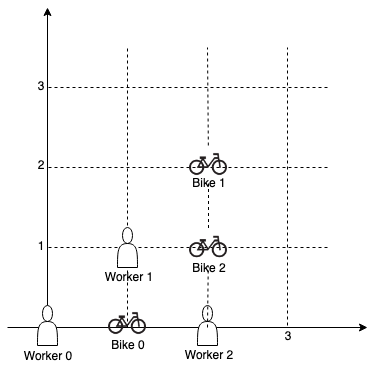

| Category | Difficulty | Likes | Dislikes |
|---|---|---|---|
| Algorithms | Medium | 963 | 90 |
array | dynamic-programming | backtracking | bit-manipulation | bitmask
google
On a campus represented as a 2D grid, there are n workers and m bikes, with n <= m. Each worker and bike is a 2D coordinate on this grid.
We assign one unique bike to each worker so that the sum of the Manhattan distances between each worker and their assigned bike is minimized.
Return the minimum possible sum of Manhattan distances between each worker and their assigned bike.
The Manhattan distance between two points p1 and p2 is Manhattan(p1, p2) = |p1.x - p2.x| + |p1.y - p2.y|.
Example 1:

Input: workers = [[0,0],[2,1]], bikes = [[1,2],[3,3]]
Output: 6
Explanation:
We assign bike 0 to worker 0, bike 1 to worker 1. The Manhattan distance of both assignments is 3, so the output is 6.Example 2:

Input: workers = [[0,0],[1,1],[2,0]], bikes = [[1,0],[2,2],[2,1]]
Output: 4
Explanation:
We first assign bike 0 to worker 0, then assign bike 1 to worker 1 or worker 2, bike 2 to worker 2 or worker 1. Both assignments lead to sum of the Manhattan distances as 4.Example 3:
Input: workers = [[0,0],[1,0],[2,0],[3,0],[4,0]], bikes = [[0,999],[1,999],[2,999],[3,999],[4,999]]
Output: 4995
Constraints:
n == workers.lengthm == bikes.length1 <= n <= m <= 10workers[i].length == 2bikes[i].length == 20 <= workers[i][0], workers[i][1], bikes[i][0], bikes[i][1] < 1000